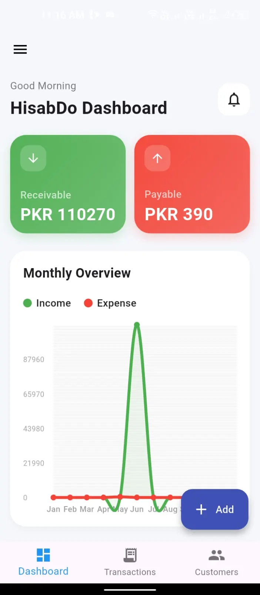
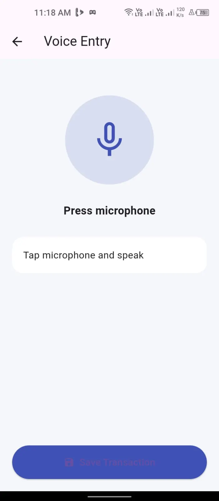
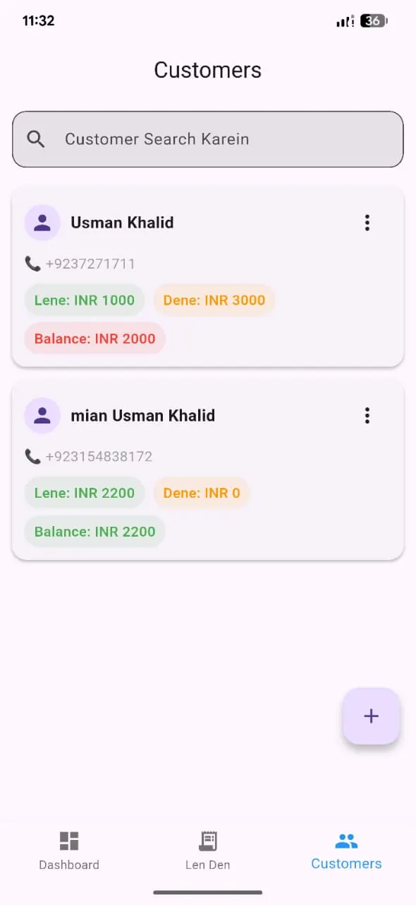
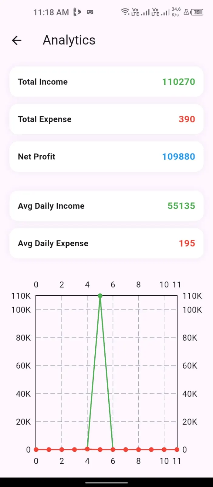
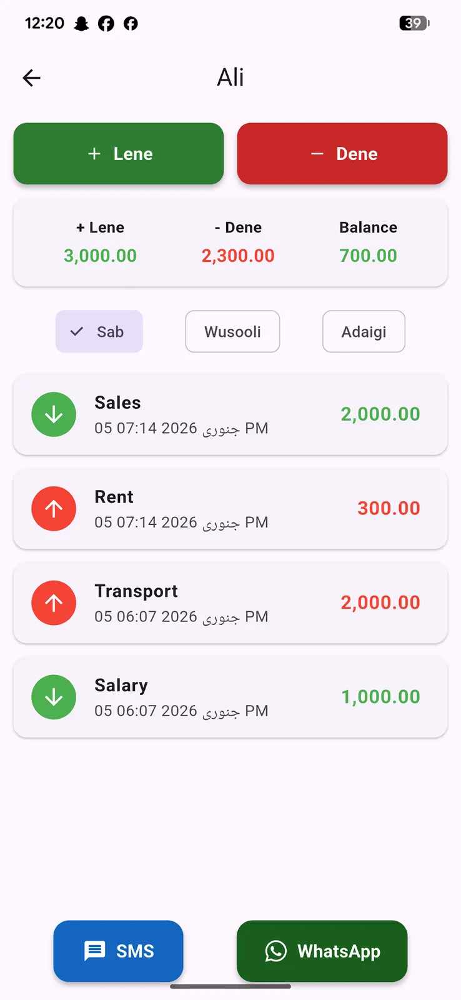

Why We Built HisabDo
Most shopkeepers still track udhar in a paper register. One torn page, one spilled cup of tea, and years of customer history is gone. Here's how HisabDo solves that — and what actually happens when you use it.
The Problem With Paper Khata
Entries Get Lost
A torn page, a spilled drink, a misplaced register — years of customer history can disappear in seconds.
No One Else Can Read It
Handwritten registers are often understood only by the shop owner, which becomes a problem when someone else needs to check a balance.
Manual Totals Cause Errors
Adding up dozens of entries by hand, every single day, leaves plenty of room for small mistakes that add up over time.
Nothing to Hand the Customer
When a customer asks "what do I owe you," there's no clean statement to give them — just a page they may not be able to read.
A Day With HisabDo
Here's what actually happens inside the app during a normal business day.
Open the App, See Where You Stand
The dashboard shows your current receivables, payables and cash position the moment you open the app — no need to flip through pages or add anything up. If a customer's balance has been overdue for a while, it's visible right away.

Record as You Go — Even by Voice
Each sale, payment, or expense is logged against the right customer as it happens. If your hands are full or you're mid-conversation with a customer, voice entry lets you record a transaction by speaking instead of typing.

Hand Them a Real Statement
Instead of reading numbers off a register, generate a clean PDF statement showing exactly what's owed, what's been paid, and the running balance — something you can send over WhatsApp in seconds.

Understand the Bigger Picture
Analytics show income trends, expense patterns and how much is tied up in unpaid dues — the kind of overview that's nearly impossible to get from a paper register no matter how carefully it's kept.

Your Records Aren't Going Anywhere
Core records are stored locally on your device, and optional signed-in features may support backup or sync when you choose to use them. This gives you flexibility whether you want to work offline or use extra convenience features when connected.

Paper Khata vs. HisabDo
📓 Paper Register
Can be lost, damaged or hard to read. Totals are calculated by hand. Only one person can realistically maintain it. No backup exists if it's misplaced.
📱 HisabDo
Stored securely on your device with optional backup. Balances update automatically. Anyone in the business can be trained to use it in minutes. Statements can be shared instantly.
Built Around Real Situations
The Corner Shop Owner
Tracks dozens of regular customers who buy on credit throughout the month and settle up on payday.
The Freelancer
Needs a simple way to see which clients still owe an invoice, without setting up complex accounting software.
The Wholesaler
Manages payables to suppliers alongside receivables from retail customers, all from one place.
The Home-Based Seller
Runs a small business from home and wants a professional-looking record without hiring a bookkeeper.
Works the Way You Do Business
🌍 In Your Language
Switch between Urdu, English, Hindi, Arabic and Roman Urdu at any time — the app adapts, not the other way around.
💱 In Your Currency
PKR, USD and INR are supported, so the app fits businesses operating in Pakistan, India and beyond.
See It for Yourself
Download HisabDo today — free, offline and built around how small businesses actually work.